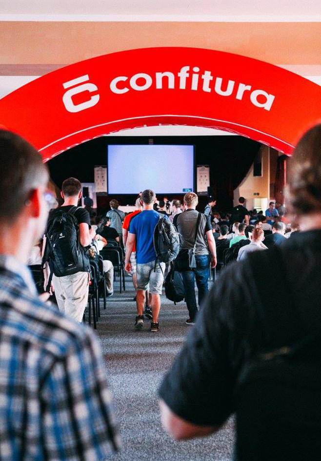
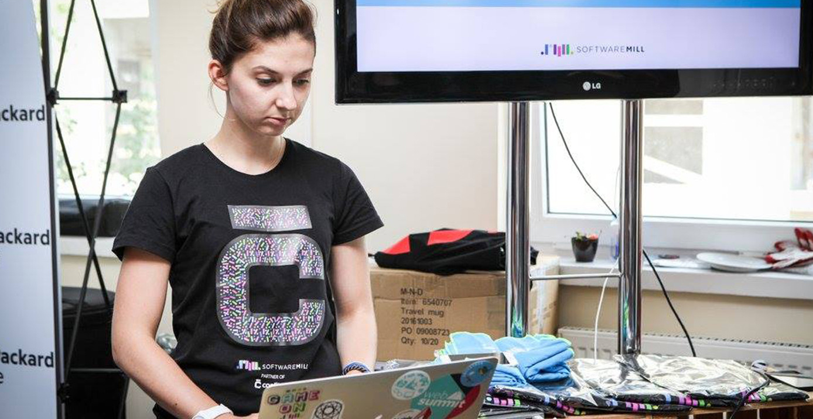

We love, love, love going to, organizing and sponsoring events for Java/Scala community in Poland and elsewhere. You can meet us at listed events, talk to us about technologies, company or business.
header h1 Meet us in the wild p We love, love, love going to...
header h1 Meet us in the wild
.pink, .light-green, .light-blue, .light-purple:We love, love, love going to, organizing and sponsoring events for Java/Scala community in Poland and elsewhere. You can meet us at listed events, talk to us about technologies, company or business.
section.header-bg.pink[.light-green|.light-blue|.light-purple]
header
h1 Meet us in the wild
p We love, love, love going to...
div.cover
.section-title-in:header.section-title-in
ul
li
h1 Latest
hr
.section-title-up:header.section-title-up
ul
li.active
h1 Latest
li
h1 Most popular
hr
.section-title-up.no-margin:header.section-title-up.no-margin
ul
li.active
h1 Latest
li
h1 Most popular
hr
.btna.btn(href="#") Read more
.btn.greena.btn.green(href="#") Read more
.btn.fulla.btn.full(href="#") Read more
.btn.largea.btn.large(href="#") Read more
.btn.large.fulla.btn.large.full(href="#") Read more
.tag.tag.technologya.tag.technology(href="#") Scala(244)
.tag.categorya.tag.category(href="#") Scala(244)
.tag.industrya.tag.industry(href="#") Scala(244)
.horizontalul.horizontal
li
a.tag(href="#") Scala(244)
li
a.tag(href="#") Play(1434)
...
.horizontal.scroll.trendingdiv.horizontal.scroll.trending
span.label Trending
ul
li
a.tag(href="#") Scala(244)
li
a.tag(href="#") Play(1434)
...
.directory.verticaldiv.directory.vertical
ul
li
a.tag(href="#") Michał Matłoka
li
a.tag(href="#") Jan Zborowski
...
.author-tagsdiv.author-tags
div.section-title-up.no-margin
span Author
hr
div.directory.vertical
ul
li
a.tag(href="#") Michał Matłoka
li
a.tag(href="#") Jan Zborowski
...
by Michał Matłoka
by Jan Zborowski
by Jacek Kunicki
by Andrzej Ludwikowski
by Adam Warski
by Marcin Baraniecki
by Tomasz Dziurko
by Mikołaj Koziarkiewicz
by Michał Chmielarz
.author-infodiv.author-info.small
div.avatar.small
img(src="images/kunicki.jpg")
div.author
a.name(href="") Maryna Aleksandrova
wbr
span.date 7 June 2016
wbr
span.time-to-read 5 min read
.blog-itemWhat is most important in cooperation with external software developers? What questions should be asked before making the decision?
Read morediv.blog-item
div.author-info.small
div.avatar.small
img(src="images/kunicki.jpg")
div.author
a.name(href="") Maryna Aleksandrova
wbr
span.date 7 June 2016
wbr
span.time-to-read 5 min read
a(href="#")
h1 Cooperation with an external software house.
p.excerpt What is most important...
a.btn(href="#") Read more
.presentationPresented at meet.js Poznań, March 2016
Event sourcing using Slick and transactions.
Read morediv.blog-item.presentation
div.author-info.small
div.avatar.small
img(src="images/kunicki.jpg")
div.author
a.name(href="") Maryna Aleksandrova
wbr
span.date 7 June 2016
p.presented-at Presented at meet.js Poznań, March 2016
a(href="#")
h1 Transactional event...
p.excerpt Event sourcing using...
a.btn(href="#") Read more
conference
June 23, 2016
Krakow, Poland
more
meetup
June 27, 2016
Warsaw, Poland
conference
July 3, 2016
Poznan, Poland
more
meetup
July 5, 2016
Krakow, Poland
conference
July 7, 2016
Warsaw, Poland
meetup
August 10, 2016
Warsaw, Poland
div.horizontal.scroll
ul.events
li.event-month June
ul
li.event
p.event-type conference
h1.event-name
a(href="#") Conference name
p.event-date June 23, 2016
p.event-place Krakow, Poland
p.event-attendees
img.avatar.small(src="images/kunicki.jpg")
...
span.more more
a.btn(href="#") Learn more
li.event
p.event-type meetup
...
li.event-month July
...
June 27, 2016 at Scalar 2016
June 27, 2016 at Scalar 2016
June 27, 2016 at Scalar 2016 what is it's a long meetup name
June 27, 2016 at Scalar 2016
June 27, 2016 at Scalar 2016
June 27, 2016 at Scalar 2016
conference
silver sponsor
June 27, 2016
Poznan, Poland
a(href="#").event-item p.event-type conference h1.event-name Scalar 2016 p.sponsorship silver sponsor p.event-date June 27, 2016 p.event-place Poznan, Poland
.full for CTA with background.pink ,.light-blue ,.light-green etc. for background colors. .full class, they define the color of button. Default button color is .blueIt doesn’t mean that you don’t match. We are always looking for awesome motivated people to join the team! Having a good attitude and being keen to learn is crucial, the rest is a matter of time. Convinced?
Contact usIt doesn’t mean that you don’t match. We are always looking for awesome motivated people to join the team! Having a good attitude and being keen to learn is crucial, the rest is a matter of time. Convinced?
section.cta.dark-blue (or .cta.full.dark-blue)
h1 Too many questions, not enought answers?...
p It doesn’t mean that you don’t match. We are ...
div.contact-info
div.author-info.small
div.avatar.small
img(src="images/kunicki.jpg")
div.author
a.name(href="") Maryna Aleksandrova
p.position Software Wizard
a.btn.full.large(href="#") Contact us
or
a.btn(href="#") Contact us
Our customer builds systems used by energy providers to build long-term client relationships, increase efficiency in energy use and manage energy demand.
We are helping to build a big data system, capable of processing huge amounts of data daily and later analysing them using both statistical and machine learning methods.
We are helping to build a big data system, capable of processing huge amounts of data daily and later analysing them using both statistical and machine learning methods.
We are helping to build a big data system, capable of processing huge amounts of data daily and later analysing them using both statistical and machine learning methods.
Read case study
Our customer builds systems used by energy providers to build long-term client relationships, increase efficiency in energy use and manage energy demand.
We are helping to build a big data system, capable of processing huge amounts of data daily and later analysing them using both statistical and machine learning methods.
We are helping to build a big data system, capable of processing huge amounts of data daily and later analysing them using both statistical and machine learning methods.
We are helping to build a big data system, capable of processing huge amounts of data daily and later analysing them using both statistical and machine learning methods.
Read case studyOur customer builds systems used by energy providers to build long-term client relationships, increase efficiency in energy use and manage energy demand.
We are helping to build a big data system, capable of processing huge amounts of data daily and later analysing them using both statistical and machine learning methods.
We are helping to build a big data system, capable of processing huge amounts of data daily and later analysing them using both statistical and machine learning methods.
We are helping to build a big data system, capable of processing huge amounts of data daily and later analysing them using both statistical and machine learning methods.
Read case study
section
ul.portfolio
li.portfolio-item (or li.portfolio-item.mobile, or li.portfolio-item.webapp)
// if .mobile include here
// div.project-image
// img(src="images/webapp.png")
div.project-description
h1 Energy meets big data
h2 Client had:
p Our customer builds systems...
h2 Client needed:
p We are helping to build ...
h2 We did:
p We are helping to build a ...
h2 Outcome:
p We are helping to build a ...
a.btn.green(href="#") Read case study
// if .webapp include here
// div.project-image
// img(src="images/webapp.png")
div.project-data
div.data-unit.category
div.data-title Category
div.data
ul
li
a.tag.category(href="#") Backend Solutions
...
div.data-unit.industry
div.data-title Industry
div.data
ul
li
a.tag.industry(href="#") Banking
...
div.data-unit.client
div.data-title Client
div.data Knip
div.data-unit.website
div.data-title Website
div.data
a.btn(href="#") knip.com
div.data-unit.technology
div.data-title Technology
div.data
ul
li
a.tag.technology(href="#") Scala
...
li.portfolio-item.mobile
.portfoilio-itemOur customer builds systems used by energy providers to build long-term client relationships, increase efficiency in energy use and manage energy demand.
We are helping to build a big data system, capable of processing huge amounts of data daily and later analysing them using both statistical and machine learning methods.
We are helping to build a big data system, capable of processing huge amounts of data daily and later analysing them using both statistical and machine learning methods.
We are helping to build a big data system, capable of processing huge amounts of data daily and later analysing them using both statistical and machine learning methods.
Read case studyBootzooka is a simple application scaffolding project to allow quick start of development for modern, web based applications. If you’d like to have a jump start developing a Scala-based Single Page Application project, skipping the boring parts and focusing on the real business value, this template might be for you!
Bootzooka contains only the very basic features, that almost any application needs (listed below). These features are fully implemented both on server- and client- side. We hope that the implementations can also serve as blueprints for new functionalities.
github.com/softwaremill/akka-http-sessionBootzooka is a simple application scaffolding project to allow quick start of development for modern, web based applications. If you’d like to have a jump start developing a Scala-based Single Page Application project, skipping the boring parts and focusing on the real business value, this template might be for you!
Bootzooka contains only the very basic features, that almost any application needs (listed below). These features are fully implemented both on server- and client- side. We hope that the implementations can also serve as blueprints for new functionalities.
github.com/softwaremill/akka-http-sessionsection
ul.portfolio
li.portfolio-item.os
div.project-description
h1 akka-http-session
iframe.github-btn(src="https://ghbtns.com/github-btn.html?user=softwaremill&repo=[repo-name]&type=star&count=true&size=large", frameborder="0", scrolling="0", width="160px", height="30px", style=" margin: 2px 0 1.6rem 0; display: inline-block; vertical-align: middle;")
p Bootzooka is a simple application ...
a.btn.pink(href="#") github.com/softwaremill/akka-http-session
div.project-data
div.data-unit.technology
div.data-title Technology
div.data
ul
li
a.tag.technology(href="#") Scala
li
...
div.data-unit.people
div.data-title People
div.data
ul
li
a(href="#")
img.avatar.small(src="images/kunicki.jpg")
li
...
li.portfolio-item.os
...
A table, on the other hand, is a changelog. If the table contains a key-value pair for the same key twice, the latter overwrites the mapping. For example, a table of user addresses with alice -> new york, bob -> san francisco, alice -> chicago means that Alice moved from New York to Chicago, not that she lives at both places in the same time.
case class MyEvent(timestamp: Long)
val myEventStream = Source
.tick(0.seconds, 1.second, "")
.map { _ =>
val now = System.currentTimeMillis()
val delay = random.nextInt(8)
MyEvent(now - delay * 1000L)
}There is almost nothing more irritating than describing a complicated problem to developers in your team for a few minutes only to notice that all of them are away from their computers.
Thanks to Ruben Gerits it is possible now to define teams and manage members of the teams inside Codebrag.
The most annoying thing for me, when I was joining a new project where Codebrag was used, it was too many commits to review on the beginning. It was not possible to mark all commits as reviewed at once and you have had to mark them one by one spending a lot of time on this useless activity ;-)
ScalaSphere by VirtusLab happened well over one-and-a-half months ago, so it's high time for some sort of summary.
A "DevTools Summit" is an uncommon theme for a conference. Typically, tooling presentation given during programming-related events focus on the "shiny-shiny", i.e. user-facing, prominent features. ScalaSphere aimed at providing a more holistic view of various tools, featuring a pronounced focus on the tool developer's perspective.
Before we get into the details, let me dispel a probable misconception about the subject matter - in the context of topics presented, "tools" was not a synonym for "IDEs". Rather, the talks covered a wide variety of meta level technologies and concepts, from learning environments, through IDEs, to license models.
The agenda can be found on the conference's website (along with slides and recordings). That being given, I will list several subjectively more intriguing highlights.
Matthias Langer shared his experiences during The Scala Refactoring Library: Problems and Perspectives, providing a very representative set of examples of problems that refactoring lib developer must deal with, especially in a language as syntactically and semantically complex as Scala.
Eugene Burmako's immediately following up What we learned in scala.meta? tied in nicely with the theme of its predecessor, going down to the language design level. Included was a very valuable discussion of various problems that crop up when dealing with the high (syntactic sugar)/low level representation mismatch:
Training platform on compiler tools, had announced a new Scala learning tool initiative. Apart from said announcement, the talk included an interesting overview of design and implementation choices during the creation of such a platform.
Alexandre Archambault presented his Scala-native tool in Easy dependency management with coursier. The improved resolution features, and the impressive processing speed were certainly a sight to behold.
Alexandre Archambault presented his Scala-native tool in Easy dependency management with coursier. The improved resolution features, and the impressive processing speed were certainly a sight to behold.
| Engine | Threads | Nodes | Send msgs/s | Receive msgs/s |
|---|---|---|---|---|
| mmap | 1 | 1 | 7 242 | 1 601 |
| mmap | 5 | 1 | 10 687 | 2 761 |
| mmap | 1 | 2 | 8 928 | 2 426 |
| mmap | 5 | 2 | 10 963 | 2 673 |
| wired tiger | 1 | 1 | 4 409 | 1 145 |
Alexandre Archambault presented his Scala-native tool in Easy dependency management with coursier. The improved resolution features, and the impressive processing speed were certainly a sight to behold.